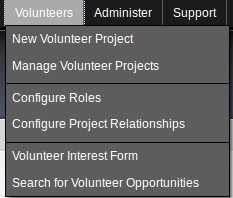

After enabling the CiviVolunteer CiviCRM Extension, the new "Volunteer" menu may be seen:

The menu contains the following options:
This is a brief walkthrough of the functionality made possible through each of these menu items and their resulting pages or dialogs.